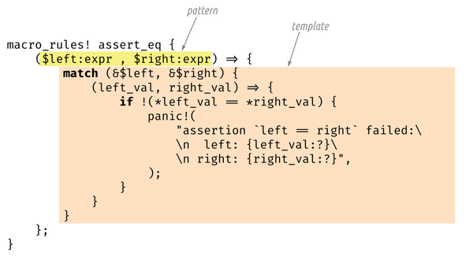

Chapter 22. Macros
A cento (from the Latin for “patchwork”) is a poem made up entirely of lines quoted from another poet.
Matt Madden
Rust supports macros, a way to extend the language in ways that go beyond what you can do with functions alone. For example, we’ve seen the assert_eq! macro, which is handy for tests:
assert_eq!(gcd(6,10),2);
This could have been written as a generic function, but the assert_eq! macro does several things that functions can’t do. One is that when an assertion fails, assert_eq! prints an error message using a format string that the user can provide by passing extra arguments to the macro. Functions in Rust can’t take a variable number of arguments. Macros can, because the way they work is completely different.
Macros are a kind of shorthand. During compilation, before types are checked and long before any machine code is generated, each macro call is expanded—that is, it’s replaced with some Rust code. The preceding macro call expands to something roughly like this:
match(&gcd(6,10),&2){(left_val,right_val)=>{if!(*left_val==*right_val){panic!("assertion `left == right` failed\\nleft: {left_val:?}\\nright: {right_val:?}",);}}}
panic! is also a macro, which itself expands to yet more Rust code (not shown here). That code uses two other macros, file!() and line!(). Once every macro call in the crate is fully expanded, Rust moves on to the next phase of compilation.
At run time, an assertion failure would look like this (and would indicate a bug in the gcd() function, since 2 is the correct answer):
thread 'main' panicked at gcd.rs:7:5:assertion `left == right` failedleft: 17right: 2
If you’re coming from C++, you may have had some bad experiences with macros. Rust macros take a different approach, similar to Scheme’s syntax-rules. Compared to C++ macros, Rust macros are better integrated with the rest of the language and therefore less error prone. Macro calls are always marked with an exclamation point, so they stand out when you’re reading code, and they can’t be called accidentally when you meant to call a function. Rust macros never insert unmatched brackets or parentheses. And Rust macros come with pattern matching, making it easier to write macros that are both maintainable and appealing to use.
In this chapter, we’ll show how to write macros using several simple examples. But like much of Rust, macros reward deep understanding, so we’ll walk through the design of a more complicated macro that lets us embed JSON literals directly in our programs.
Macro Basics
Figure 22-1 shows part of the source code for the assert_eq! macro.
macro_rules! is the main way to define macros in Rust. Note that there is no ! after assert_eq in this macro definition: the ! is only included when calling a macro, not when defining it.
Not all macros are defined this way: a few, like file!, line!, and macro_rules! itself, are built into the compiler, and we’ll talk about another approach, called procedural macros, at the end of this chapter. But for the most part, we’ll focus on macro_rules!, which is (so far) the easiest way to write your own.
A macro defined with macro_rules! works entirely by pattern matching. The body of a macro is just a series of rules:
( pattern1 ) => ( template1 ); ( pattern2 ) => ( template2 ); ...

Figure 22-1. The assert_eq! macro
The version of assert_eq! in Figure 22-1 has just one pattern and one template.
Incidentally, you can use square brackets or curly braces instead of parentheses around the pattern or the template; it makes no difference to Rust. Likewise, when you call a macro, these are all equivalent:
assert_eq!(gcd(6,10),2);assert_eq![gcd(6,10),2];assert_eq!{gcd(6,10),2}
The only difference is that semicolons are usually optional after curly braces. By convention, we use parentheses when calling assert_eq!, square brackets for vec!, and curly braces for macro_rules!.
Now that we’ve shown a simple example of a macro’s expansion and the definition that generated it, we can get into the details necessary to put this to work:
-
We’ll explain exactly how Rust goes about finding and expanding macro definitions in your program.
-
We’ll point out some subtleties inherent in the process of generating code from macro templates.
-
Finally, we’ll show how macros handle repeating patterns, such as the list of expressions in a
vec![].
Basics of Macro Expansion
Rust expands macros very early during compilation. The compiler reads your source code from beginning to end, defining and expanding macros as it goes. You can’t call a macro before it is defined, because Rust expands each macro call before it even looks at the rest of the program. (By contrast, functions and other items don’t have to be in any particular order. It’s OK to call a function that won’t be defined until later in the crate.)
When Rust expands an assert_eq! macro call, what happens is a lot like evaluating a match expression. Rust first matches the arguments against the pattern, as shown in Figure 22-2.

Figure 22-2. Expanding a macro, part 1: pattern-matching the arguments
Macro patterns are a mini-language within Rust. They’re essentially regular expressions for matching code. But where regular expressions operate on characters, patterns operate on tokens—the numbers, names, punctuation marks, and so forth that are the building blocks of Rust programs. This means you can use comments and whitespace freely in macro patterns to make them as readable as possible. Comments and whitespace aren’t tokens, so they don’t affect matching.
Another important difference between regular expressions and macro patterns is that parentheses, brackets, and braces always occur in matched pairs in Rust. This is checked before macros are expanded, not only in macro patterns but throughout the language.
In this example, our pattern contains the fragment $left:expr, which tells Rust to match an expression (in this case, gcd(6, 10)) and assign it the name $left. Rust then matches the comma in the pattern with the comma following gcd’s arguments. Just like regular expressions, patterns have only a few special characters that trigger interesting matching behavior; everything else, like this comma, has to match verbatim or else matching fails. Lastly, Rust matches the expression 2 and gives it the name $right.
Both code fragments in this pattern are of type expr: they expect expressions. We’ll see other types of code fragments in “Fragment Types”.
Since this pattern matched all of the arguments, Rust expands the corresponding template (Figure 22-3).

Figure 22-3. Expanding a macro, part 2: filling in the template
Rust replaces $left and $right with the code fragments it found during matching.
It’s a common mistake to include the fragment type in the output template: writing $left:expr rather than just $left. Rust does not immediately detect this kind of error. It sees $left as a substitution, and then it treats :expr just like everything else in the template: tokens to be included in the macro’s output. So the errors won’t happen until you call the macro; then it will generate bogus output that won’t compile. If you get error messages like cannot find type `expr` in this scope and help: maybe you meant to use a path separator here when using a new macro, check it for this mistake. (“Debugging Macros” offers more general advice for situations like this.)
Macro templates aren’t much different from any of a dozen template languages commonly used in web programming. The only difference—and it’s a significant one—is that the output is Rust code.
Unintended Consequences
Plugging fragments of code into templates is subtly different from regular code that works with values. These differences aren’t always obvious at first. The macro we’ve been looking at, assert_eq!, contains some slightly strange bits of code for reasons that say a lot about macro programming. Let’s look at two funny bits in particular.
First, why does this macro create the variables left_val and right_val? Is there some reason we can’t simplify the template to look like this?
if!($left==$right){panic!("assertion `left == right` failed\nleft: {:?}\nright: {:?}",$left,$right,);}
To answer this question, try mentally expanding the macro call assert_eq!(letters.pop(), Some('z')). What would the output be? Naturally, Rust would plug the matched expressions into the template in multiple places. It seems like a bad idea to evaluate the expressions all over again when building the error message, though, and not just because it would take twice as long: since letters.pop() removes a value from a vector, it’ll produce a different value the second time we call it! That’s why the real macro computes $left and $right only once and stores their values.
Moving on to the second question: why does this macro borrow references to the values of $left and $right? Why not just store the values in variables, like this?
macro_rules!bad_assert_eq{($left:expr,$right:expr)=>{match($left,$right){(left_val,right_val)=>{if!(left_val==right_val){panic!("assertion failed"/* ... */);}}}};}
For the particular case we’ve been considering, where the macro arguments are integers, this would work fine. But if the caller passed, say, a String variable as $left or $right, this code would move the value out of the variable!
fnmain(){lets="a rose".to_string();bad_assert_eq!(s,"a rose");println!("confirmed: {s} is a rose");// error: use of moved value "s"}
Since we don’t want assertions to move values, the macro borrows references instead.
(You may have wondered why the macro uses match rather than let to define the variables. We wondered too. It turns out there’s no particular reason for this. let would have been equivalent.)
In short, macros can do surprising things. If strange things happen around a macro you’ve written, it’s a good bet that the macro is to blame.
One bug that you won’t see is this classic C++ macro bug:
// buggy C++ macro to add 1 to a number#define ADD_ONE(n) n + 1
For reasons familiar to most C++ programmers, and not worth explaining fully here, unremarkable code like ADD_ONE(1) * 10 or ADD_ONE(1 << 4) produces very surprising results with this macro. To fix it, you’d add more parentheses to the macro definition. This isn’t necessary in Rust, because Rust macros are better integrated with the language. Rust knows when it’s handling expressions, so it effectively adds parentheses whenever it pastes one expression into another.
Repetition
The standard vec! macro comes in three forms:
// New empty Vecletunicorns=vec![];// Repeat a value N timesletbuffer=vec![0_u8;1000];// A list of values, separated by commasletnoodles=vec!["udon","ramen","soba"];
It can be implemented like this:
macro_rules!vec{()=>{::std::vec::Vec::new()};($elem:expr;$n:expr)=>{::std::vec::from_elem($elem,$n)};($($x:expr),*)=>{<[_]>::into_vec(Box::new([$($x),*]))};}
There are three rules here. Whenever Rust encounters a call to this macro, it will try each rule in turn. If no rule matches, it’s an error.
The first rule in the macro has an empty pattern, so it matches only macro calls with no arguments: vec![]. These expand to a regular function call to Vec::new().
The second rule handles uses like vec![0u8; 1000]. It happens that there is a standard (but undocumented) function, std::vec::from_elem, that does exactly what’s needed here, so this rule is also straightforward.
The third rule handles vec!["udon", "ramen", "soba"]. The first part of the pattern, $( $x:expr ),*, uses a feature we haven’t seen before: repetition. It matches 0 or more expressions, separated by commas. More generally, the syntax $( PATTERN ),* is used to match any comma-separated list, where each item in the list matches PATTERN.
The * here has the same meaning as in regular expressions (“0 or more”) although admittedly regexps do not have a special ,* repeater. You can also use + to require at least one match, or ? for zero or one match. Other tokens can be used as separators in place of the comma. For example, $( PATTERN );* would match a semicolon-separated list. Table 22-1 gives the full suite of repetition patterns.
| Pattern | Meaning |
|---|---|
$( ... )* |
Match 0 or more times with no separator |
$( ... ),* |
Match 0 or more times, separated by commas |
$( ... )separator* |
Match 0 or more times, separated by some other token |
$( ... )+ |
Match 1 or more times with no separator |
$( ... ),+ |
Match 1 or more times, separated by commas |
$( ... )separator+ |
Match 1 or more times, separated by some other token |
$( ... )? |
Match 0 or 1 times |
The code fragment $x is not just a single expression but a list of expressions. The template for this rule uses repetition syntax too:
<[_]>::into_vec(Box::new([$($x),*]))
Again, there are standard methods that do exactly what we need. This code creates a boxed array and then uses the [T]::into_vec method to convert the boxed array to a vector.
The first bit, <[_]>, is an unusual way to write the type “slice of something,” while expecting Rust to infer the element type. Types whose names are plain identifiers can be used in expressions without any fuss, but types like fn(), &str, or [_] must be wrapped in angle brackets.
Repetition comes in at the end of the template, where we have $($x),*. This $(...),* is the same syntax we saw in the pattern. It iterates over the list of expressions that we matched for $x and inserts them all into the template, separated by commas.
In this case, the repeated output looks just like the input. But that doesn’t have to be the case. We could have written the rule like this:
($($x:expr),*)=>{{letmutv=Vec::new();$(v.push($x);)*v}};
Here, the part of the template that reads $( v.push($x); )* inserts a call to v.push() for each expression in $x. A macro arm can expand to a sequence of expressions, but here we need just a single expression, so we wrap the assembly of the vector in a block.
Our vec macro has one minor bug, though. Unlike virtually everything else in the language, patterns using $( ... ),* do not automatically accept the optional trailing comma in vec![1, 2,]. Users expect this to work in macros. We can support it by adding $( , )? to the end of the third pattern, like this:
($($x:expr),*$(,)?)=>...
Built-In Macros
The Rust compiler supplies several macros that are helpful when you’re defining your own macros. None of these could be implemented using macro_rules! alone. They’re hardcoded in rustc:
file!(),line!(),column!()-
file!()expands to a string literal: the current filename.line!()andcolumn!()expand tou32literals giving the current line and column (counting from 1).If one macro calls another, which calls another, all in different files, and the last macro calls
file!(),line!(), orcolumn!(), it will expand to indicate the location of the first macro call. - module_path!()
-
This expands to a string, the Rust path to the current module, such as
"fernlib::fronds", as opposed to the file path"/home/fernando/fernlib/src/fronds.rs". stringify!(...tokens...)-
Expands to a string literal containing the given tokens. The
assert!macro uses this to generate an error message that includes the code of the assertion.Macro calls in the argument are not expanded:
stringify!(line!())expands to the string"line!()".Rust constructs the string from the tokens, so there are no line breaks or comments in the string.
concat!(str0, str1, ...)-
Expands to a single string literal made by concatenating its arguments.
compile_error!(message)-
Stops compilation with the given error message.
One of the disadvantages of macros is that when user code calls a macro incorrectly, the compiler doesn’t have enough information to report a useful error. Rust often says something like “error: no rules expected
,“. A macro can help by including a pattern that matches common user errors and produces acompiler_error!with a custom message.
Debugging Macros
Debugging a wayward macro can be challenging. The biggest problem is the lack of visibility into the process of macro expansion. Rust will often expand all macros, find some kind of error, and then print an error message that does not show the fully expanded code that contains the error!
Here are three tools to help troubleshoot macros. All three rely on experimental features of Rust, so they require the nightly version of Rust to be installed. You can do this with rustup toolchain install nightly, then compile your code with cargo +nightly build.
First and simplest, you can ask Rust to show what your code looks like after expanding all macros. Most Rust IDEs offer a menu option to do this for any given macro call. Alternatively, you can install the cargo-expand extension using cargo install cargo-expand. Then use cargo expand path::to::module to inspect any module in your project. The fully expanded code is pretty-printed and dumped to your terminal. Unfortunately, this works only if your code is free of syntax errors.
Second, Rust provides a log_syntax!() macro that simply prints its arguments to the terminal at compile time. You can use this for println!-style debugging of your macro as it’s being expanded. This macro requires the #![feature(log_syntax)] feature flag.
Third, you can ask the Rust compiler to log all macro calls to the terminal. Insert trace_macros!(true); somewhere in your code. From that point on, each time Rust expands a macro, it will print the macro name and arguments. For example, consider this program:
#![feature(trace_macros)]fnmain(){trace_macros!(true);letbuffer=vec![0u8;64];trace_macros!(false);assert_eq!(buffer.len(),64);}
It produces this output:
$cargo+nightlybuildnote: trace_macro--> src/main.rs:7:18|7 | let buffer = vec![0u8; 64];| ^^^^^^^^^^^^^|= note: expanding `vec! { 0u8; 64 }`= note: to `$crate :: vec :: from_elem(0u8, 64)`
The compiler shows the code of each macro call, both before and after expansion. The line trace_macros!(false); turns tracing off again, so the call to println!() is not traced.
Building the json! Macro
We’ve now discussed the core features of macro_rules!. In this section, we’ll incrementally develop a macro for building JSON data. We’ll use this example to show what it’s like to develop a macro, present the few remaining pieces of macro_rules!, and offer some advice on how to make sure your macros behave as desired.
Back in Chapter 10, we presented this enum for representing JSON data:
#[derive(Clone, PartialEq, Debug)]enumJson{Null,Boolean(bool),Number(f64),String(String),Array(Vec<Json>),Object(Box<HashMap<String,Json>>),}
The syntax for writing out Json values is unfortunately rather verbose:
letstudents=Json::Array(vec![Json::Object(Box::new(vec![("name".to_string(),Json::String("Jim Blandy".to_string())),("class_of".to_string(),Json::Number(1926.0)),("major".to_string(),Json::String("Tibetan throat singing".to_string())),].into_iter().collect())),Json::Object(Box::new(vec![("name".to_string(),Json::String("Jason Orendorff".to_string())),("class_of".to_string(),Json::Number(1702.0)),("major".to_string(),Json::String("Knots".to_string())),].into_iter().collect())),]);
We would like to be able to write this using a more JSON-like syntax:
letstudents=json!([{"name":"Jim Blandy","class_of":1926,"major":"Tibetan throat singing"},{"name":"Jason Orendorff","class_of":1702,"major":"Knots"}]);
What we want is a json! macro that takes a JSON value as an argument and expands to a Rust expression like the one in the previous example.
Fragment Types
The first job in writing any complex macro is figuring out how to match, or parse, the desired input.
We can already see that the macro will have several rules, because there are several different sorts of things in JSON data: objects, arrays, numbers, and so forth. In fact, we might guess that we’ll have one rule for each JSON type:
macro_rules! json {
(null) => { Json::Null };
([ ... ]) => { Json::Array(...) };
({ ... }) => { Json::Object(...) };
(???) => { Json::Boolean(...) };
(???) => { Json::Number(...) };
(???) => { Json::String(...) };
}
This is not quite correct, as macro patterns offer no way to tease apart the last three cases, but we’ll see how to deal with that later. The first three cases, at least, clearly begin with different tokens, so let’s start with those.
The first rule already works:
macro_rules!json{(null)=>{Json::Null};}#[test]fnjson_null(){assert_eq!(json!(null),Json::Null);// passes!}
To add support for JSON arrays, we might try matching the elements as exprs:
macro_rules!json{(null)=>{Json::Null};([$($element:expr),*])=>{Json::Array(vec![$($element),*])};}
Unfortunately, this does not match all JSON arrays. Here’s a test that illustrates the problem:
#[test]fnjson_array_with_json_element(){letmacro_generated_value=json!([// valid JSON that doesn't match `$element:expr`{"pitch":440.0}]);lethand_coded_value=Json::Array(vec![Json::Object(Box::new(vec![("pitch".to_string(),Json::Number(440.0)),].into_iter().collect())),]);assert_eq!(macro_generated_value,hand_coded_value);}
The pattern $( $element:expr ),* means “a comma-separated list of Rust expressions.” But many JSON values, particularly objects, aren’t valid Rust expressions. They won’t match.
Since not every bit of code you want to match is an expression, Rust supports several other fragment types, listed in Table 22-2.
Most of the options in this table strictly enforce Rust syntax. The expr type matches only Rust expressions (not JSON values), ty matches only Rust types, and so on. They’re not extensible: there’s no way to define new arithmetic operators or new keywords that expr would recognize. We won’t be able to make any of these match arbitrary JSON data.
The last two, ident and tt, support matching macro arguments that don’t look like Rust code. ident matches any identifier. tt matches a single token tree: either a properly matched pair of brackets, (...), [...], or {...}, and everything in between, including nested token trees, or a single token that isn’t a bracket, like 1926 or "Knots".
Token trees are exactly what we need for our json! macro. Every JSON value is a single token tree: numbers, strings, Boolean values, and null are all single tokens; objects and arrays are bracketed. So we can write the patterns like this:
macro_rules!json{(null)=>{Json::Null};([$($element:tt),*])=>{Json::Array(...)};({$($key:tt:$value:tt),*})=>{Json::Object(...)};($other:tt)=>{...// TODO: Return Number, String, or Boolean};}
This version of the json! macro can match all JSON data. Now we just need to produce correct Rust code.
To make sure Rust can gain new syntactic features in the future without breaking any macros you write today, Rust restricts tokens that appear in patterns right after a fragment. The “Can be followed by...” column of Table 22-2 shows which tokens are allowed. For example, the pattern $x:expr ~ $y:expr is an error, because ~ isn’t allowed after an expr. The pattern $vars:pat => $handler:expr is OK, because $vars:pat is followed by the arrow =>, one of the allowed tokens for a pat, and $handler:expr is followed by nothing, which is always allowed.
Recursion in Macros
You’ve already seen one trivial case of a macro calling itself: our implementation of vec! uses recursion to support trailing commas. Here we can show a more significant example: json! needs to call itself recursively.
We might try supporting JSON arrays without using recursion, like this:
([$($element:tt),*])=>{Json::Array(vec![$($element),*])};
But this wouldn’t work. We ’d be pasting JSON data (the $element token trees) right into a Rust expression. They’re two different languages.
We need to convert each element of the array from JSON form to Rust. Fortunately, there’s a macro that does this: the one we’re writing!
([$($element:tt),*])=>{Json::Array(vec![$(json!($element)),*])};
Objects can be supported in the same way:
({$($key:tt:$value:tt),*})=>{Json::Object(Box::new(vec![$(($key.to_string(),json!($value))),*].into_iter().collect()))};
The compiler imposes a recursion limit on macros: 128 calls, by default. That’s more than enough for normal uses of json!, but complex recursive macros sometimes hit the limit. You can adjust it by adding this attribute at the top of the crate where the macro is used:
#![recursion_limit ="256"]
Our json! macro is nearly complete. All that remains is to support Boolean, number, and string values.
Using Traits with Macros
Writing complex macros always poses puzzles. It’s important to remember that macros themselves are not the only puzzle-solving tool at your disposal.
Here, we need to support json!(true), json!(1.0), and json!("yes"), converting the value, whatever it may be, to the appropriate kind of Json value. But macros are not good at distinguishing types. We can imagine writing:
macro_rules!json{(true)=>{Json::Boolean(true)};(false)=>{Json::Boolean(false)};...}
This approach breaks down right away. There are only two Boolean values, but rather more numbers than that, and even more strings.
Fortunately, there is a standard way to convert values of various types to one specified type: the From trait, covered . We simply need to implement this trait for a few types:
implFrom<bool>forJson{fnfrom(b:bool)->Json{Json::Boolean(b)}}implFrom<i32>forJson{fnfrom(i:i32)->Json{Json::Number(iasf64)}}implFrom<String>forJson{fnfrom(s:String)->Json{Json::String(s)}}impl<'a>From<&'astr>forJson{fnfrom(s:&'astr)->Json{Json::String(s.to_string())}}...
In fact, all 12 numeric types should have very similar implementations, so it might make sense to write a macro, just to avoid the copy and paste:
macro_rules!impl_from_num_for_json{($($t:ident)*)=>{$(implFrom<$t>forJson{fnfrom(n:$t)->Json{Json::Number(nasf64)}})*};}impl_from_num_for_json!(u8i8u16i16u32i32u64i64u128i128usizeisizef32f64);
Now we can use Json::from(value) to convert a value of any supported type to Json. In our macro, it’ll look like this:
($other:tt)=>{Json::from($other)// Handle Boolean/number/string};
Adding this rule to our json! macro makes it pass all the tests we’ve written so far. Putting together all the pieces, it currently looks like this:
macro_rules!json{(null)=>{Json::Null};([$($element:tt),*])=>{Json::Array(vec![$(json!($element)),*])};({$($key:tt:$value:tt),*})=>{Json::Object(Box::new(vec![$(($key.to_string(),json!($value))),*].into_iter().collect()))};($other:tt)=>{Json::from($other)// Handle Boolean/number/string};}
As it turns out, the macro unexpectedly supports the use of variables and even arbitrary Rust expressions inside the JSON data, a handy extra feature:
letwidth=4.0;letdesc=json!({"width":width,"height":(width*9.0/4.0)});
Because (width * 9.0 / 4.0) is parenthesized, it’s a single token tree, so the macro successfully matches it with $value:tt when parsing the object.
Scoping and Hygiene
A surprisingly tricky aspect of writing macros is that they involve pasting code from different scopes together. So the next few pages cover the two ways Rust handles scoping: one way for local variables and arguments, and another way for everything else.
To show why this matters, let’s rewrite our rule for parsing JSON objects (the third rule in the json! macro shown previously) to eliminate the temporary vector. We can write it like this:
({$($key:tt:$value:tt),*})=>{{letmutfields=Box::new(HashMap::new());$(fields.insert($key.to_string(),json!($value));)*Json::Object(fields)}};
Now we’re populating the HashMap not by using collect() but by repeatedly calling the .insert() method. This means we need to store the map in a temporary variable, which we’ve called fields.
But then what happens if the code that calls json! happens to use a variable of its own, also named fields?
letfields="Fields, W.C.";letrole=json!({"name":"Larson E. Whipsnade","actor":fields});
Expanding the macro would paste together two bits of code, both using the name fields for different things!
letfields="Fields, W.C.";letrole={letmutfields=Box::new(HashMap::new());fields.insert("name".to_string(),Json::from("Larson E. Whipsnade"));fields.insert("actor".to_string(),Json::from(fields));Json::Object(fields)};
This may seem like an unavoidable pitfall whenever macros use temporary variables, and you may already be thinking through the possible fixes. Perhaps we should rename the variable that the json! macro defines to something that its callers aren’t likely to pass in: instead of fields, we could call it __json$fields.
The surprise here is that the macro works as is. Rust renames the variable for you! This feature, first implemented in Scheme macros, is called hygiene, and so Rust is said to have hygienic macros.
The easiest way to understand macro hygiene is to imagine that every time a macro is expanded, the parts of the expansion that come from the macro itself are painted a different color.
Variables of different colors, then, are treated as if they had different names:
let fields = "Fields, W.C.";
let role = {
let mut fields = Box::new(HashMap::new());
fields.insert("name".to_string(), Json::from("Larson E. Whipsnade"));
fields.insert("actor".to_string(), Json::from(fields));
Json::Object(fields)
};
Note that bits of code that were passed in by the macro caller and pasted into the output, such as "name" and "actor", keep their original color (black). Only tokens that originate from the macro template are painted.
Now there’s one variable named fields (declared in the caller) and a separate variable named fields (introduced by the macro). Since the names are different colors, the two variables don’t get confused.
If a macro really does need to refer to a variable in the caller’s scope, the caller has to pass the name of the variable to the macro.
(The paint metaphor isn’t meant to be an exact description of how hygiene works. The real mechanism is even a little smarter than that, recognizing two identifiers as the same, regardless of “paint,” if they refer to a common variable that’s in scope for both the macro and its caller. But cases like this are rare in Rust. If you understand the preceding example, you know enough to use hygienic macros.)
You may have noticed that many other identifiers were painted one or more colors as the macros were expanded: Box, HashMap, and Json, for example. Despite the paint, Rust had no trouble recognizing these type names. That’s because hygiene in Rust is limited to local variables and arguments. When it comes to constants, types, methods, modules, statics, and macro names, Rust is “colorblind.”
This means that if our json! macro is used in a module where Box, HashMap, or Json is not in scope, the macro won’t work. We’ll show how to avoid this problem in the next section.
First, we’ll consider a case where Rust’s strict hygiene gets in the way, and we need to work around it. Suppose we have many functions that contain this line of code:
letreq=ServerRequest::new(server_socket.session());
Copying and pasting that line is a pain. Can we use a macro instead?
macro_rules!setup_req{()=>{letreq=ServerRequest::new(server_socket.session());};}fnhandle_http_request(server_socket:&ServerSocket){setup_req!();// declares `req`, uses `server_socket`...// code that uses `req`}
As written, this doesn’t work. It would require the name server_socket in the macro to refer to the local server_socket declared in the function, and vice versa for the variable req. But hygiene prevents names in macros from “colliding” with names in other scopes—even in cases like this, where that’s what you want.
The solution is to pass the macro any identifiers you plan on using both inside and outside the macro code:
macro_rules!setup_req{($req:ident,$server_socket:ident)=>{let$req=ServerRequest::new($server_socket.session());};}fnhandle_http_request(server_socket:&ServerSocket){setup_req!(req,server_socket);...// code that uses `req`}
Since req and server_socket are now provided by the function, they’re the right “color” for that scope.
Hygiene makes this macro a little wordier to use, but that’s a feature, not a bug: it’s easier to reason about hygienic macros knowing that they can’t mess with local variables behind your back. If you search for an identifier like server_socket in a function, you’ll find all the places where it’s used, including macro calls.
Importing and Exporting Macros
Since macros are expanded early in compilation, before Rust knows the full module structure of your project, the rules for their scope and for importing and exporting them are a bit unusual.
By default, a macro is visible from the point of its declaration to the end of the enclosing scope. To declare a macro in one module and access it from other modules within the same crate, declare a pub(crate) alias for the macro:
macro_rules!ping{...}pub(crate)useping;
Other modules can then use the macro just like any other pub(crate) feature of that module. If the above code is in the sonar module, in another module you can write use crate::sonar::ping; to import it, then call ping!(). Or, if you prefer, you can use the macro without importing it by writing out its full path: crate::sonar::ping!().
Importing a macro from another crate works much the same way. You can write use tokio::select; to import the select! macro from the tokio crate, or use tokio::select! {...} directly.
To export a macro, mark its definition with the #[macro_export] attribute:
/// ...documentation for `select!` macro...#[macro_export]macro_rules!select{...}
This causes the macro to be exported from your crate’s root module, regardless of where the macro is defined. For example, Tokio’s select! macro is defined in the file src/macros/select.rs, but it is nonetheless exported as tokio::select!, not tokio::macros::select::select!.
If you do want to export a macro from a submodule of your crate, it’s possible, but it requires a slightly ugly hack. First export the macro from the crate root, but undocumented, with an obscure name. Then, in the same file, declare a public alias for the macro with pub use:
#[doc(hidden)]#[macro_export]macro_rules!_secret_macro_sweep{...}/// ...documentation for `sweep!`...pubuse_secret_macro_sweepassweep;
If this code is in src/monsters/broom.rs, and monsters and monsters::broom are both public, then the macro is accessible from outside the crate as my_crate_name::monsters::broom::sweep! and inside the crate as crate::monsters::broom::sweep!.
Of course, exporting a module means it can be expanded within user code that you don’t control. A macro therefore shouldn’t rely on anything being in scope—there’s no telling what will be in scope where it’s used. Even features of the standard prelude can be shadowed.
Instead, the macro should use absolute paths to any names it uses. macro_rules! provides the special fragment $crate to help with this. This is not the same as crate, which is a keyword that can be used in paths anywhere, not just in macros. $crate acts like an absolute path to the root module of the crate where the macro was defined. Instead of Json, we can write $crate::Json, which works even if Json was not imported. HashMap can be changed to either ::std::collections::HashMap or $crate::macros::HashMap. In the latter case, we’ll have to re-export HashMap, because $crate can’t be used to access private features of a crate. It really just expands to something like ::jsonlib, an ordinary path. Visibility rules are unaffected.
After moving the macro to its own module macros and modifying it to use $crate, it looks like this. This is the final version:
// macros.rspubusestd::boxed::Box;pubusestd::collections::HashMap;pubusestd::string::ToString;#[macro_export]macro_rules!json{(null)=>{$crate::Json::Null};([$($element:tt),*])=>{$crate::Json::Array(vec![$($crate::json!($element)),*])};({$($key:tt:$value:tt),*})=>{{letmutfields=$crate::macros::Box::new($crate::macros::HashMap::new());$(fields.insert($crate::macros::ToString::to_string($key),$crate::json!($value),);)*$crate::Json::Object(fields)}};($other:tt)=>{$crate::Json::from($other)};}
Since the .to_string() method is part of the standard ToString trait, we use $crate to refer to that as well, using syntax we introduced in “Fully Qualified Method Calls”: $crate::macros::ToString::to_string($key). In our case, this isn’t strictly necessary to make the macro work, because ToString is in the standard prelude. But if you’re calling methods of a trait that may not be in scope at the point where the macro is called, a fully qualified method call is the best way to do it.
Beyond macro_rules!
Macro patterns can parse input that’s even more intricate than JSON, but the complexity quickly gets out of hand. As an alternative, Rust offers procedural macros, a more general mechanism for expanding code at build time. Procedural macros can’t use macro_rules! pattern-matching. They are more like extensions to the compiler. Each one is implemented as a regular Rust function, operating on Rust tokens, and the compiler calls the function each time it needs to expand the macro.
Any macro_rules! macro could be implemented as a procedural macro, but procedural macros can also do things that macro_rules! can’t, like access files and the network at build time. For example, the diesel database library uses procedural macros to connect to a database and generate code based on the schema of that database at compile time. Procedural macros can also extend the Rust language in two ways that macro_rules! can’t. They can extend the #[derive] attribute, as we’ve seen with #[derive(serde::Serialize)]. They can also be used to implement custom attributes like #[tokio::test].
The details are beyond the scope of this book. To get started, see the documentation and examples for the syn crate.
If your code generation needs outgrow macros, you can use a build script instead. The Cargo documentation shows how. It involves writing a program that generates the Rust code you want, adding a line to Cargo.toml to run that program as part of the build process, and using include! to get the generated code into your crate.